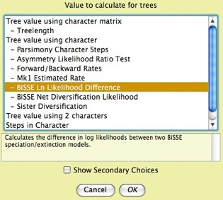

|
|
New Features and History of Changes
Here are some of the more notable new
features and bug fixes since version 1.0. Bugs that would have
yielded errors in substantive results (e.g. a bug in a phylogenetic
calculation) are marked with  . .
Beginning with version 1.1, a list
of new modules in the latest version can be seen by choosing "List
new modules" from the Help menu.
Version 2.01
New Features
- "Phone home" system. Mesquite now checks its website on startup to see if there are notices for users, for instance about updates or bugs. (This can be disabled in the Defaults submenu of the Edit menu.) Other packages can also be set to check their websites. This checking does not transmit data about you other that what your web browser does when you go to a website.
- The search facility to help you find features ("Search Features", available in each window: ) has been improved to include menu items and tools in open windows.
- To help minimize user confusion, there are new options in how Mesquite by default presents choices of modules to the user. First, dialog boxes that offer a choice of module may now show more detailed choices. For instance, whereas previously you would be offered a choice "Tree value using character", now there will also be a list beneath it of the particular values available:

This new default can be reverted to the old style by deselecting "Show Subchoices in Module Dialogs" in the Defaults submenu. Second, calculations that use characters or matrices can be set to use Stored Characters and Stored Matrices by default, without asking. This default may help novice users who otherwise would be confused by a request about simulations and so on. You can set this default as explained on the Characters page.
- The Defaults menu is now a submenu of the File menu, and is available from all windows.
- GenBank and GenPept import. Mesquite can
now import GenBank and GenPept files. If multiple files are dropped
onto a molecular matrix of the same sort (e.g., DNA), then
these sequences will be added to the matrix.
- New alignment tools (in the Align package):
- Align DNA to Protein. A DNA matrix can be aligned to match that of a translated amino acid alignment.
- Muscle Align. A portion of a sequence matrix can be sent to MUSCLE to be aligned and then reimported back into the matrix.
- Shift to Minimize Stop Codons. Sequences will individually be shifted 0, 1, or 2 based to minimize the number of stop codons
in each sequence. This is useful to set the reading frame of each sequence, for example for subsequent translation to amino acids.
- Tree of Life Web Project linking and other online databases. Trees from the Tree of Life Web Project can
be downloaded and navigated. In addition, a new tool in the tree window will search for taxon names in various on-line databases, including TreeBase, iSpecies, etc.
- Export NEXUS Tree File. This new exporter allows you to save a tree file (optionally including a taxa block) from a Mesquite project.
- A Search Within Clade Tool is available in the
tree window. This tool rearranges the branches above the node
touched looking for a better tree.
The objective function used (e.g., treelength, or something
else) can be chosen by the user. This is similar to MacClade's
search tool in that it directly rearranges the current tree.
- Randomly Resolve Polytomies has a new convention. In previous versions it paid little attention to branch lengths, simply using the same convention as when a user moves branches. This resulted in the descendant nodes acquiring different distances from the root than they had had before resolution. The new convention is to preserve distance from root when resolving polytomies. The user however must specify what portion of branch lengths to put on new branches formed during the resolution.
- The Contained Associates tree drawer, most commonly used to display gene trees within species trees, has been renamed as Contained Gene (or Other) Trees.
- The Defaults menu of the Log window has been moved to a submenu of the File menu, and is now available in all windows.
Bug Fixes
- Various bugs concerning behavior of windows and dialogs under Linux and Mac OS X were fixed.
- () Deep coalescences were miscounted if a species or population lacked any containing genes. Such a species or population would contribute -1 to the deep coalescence count in such a circumstance (it should have contributed 0). This could, for instance, result in a deep coalescence score of a negative number, but it could also simply lower the total. This bug did not affect relative scores among trees (as long as they contained the same set of populations and genes) and so many analyses, such as searching for optimal species trees, would be unaffected. This bug was fixed in build j28 of version 2.01. The very first build of 2.01, j27, released for a few hours, has this bug.
- () The Number of Stops in a taxon in some
circumstances was underestimated if there were some characters whose codon positions were not specified.
Version 2.0
New Features
- Search system — A "Search"
text entry box is now available at the top of most windows (in
the Log window, at the bottom). Enter text there and hit Return,
and the text will be sought. There are several modes, marked
by different symbols:
- & — Search Features, AND:
searches through information about Mesquite's features and
returns a description of those features matching ALL of
the search terms
- / — Search Features, OR: searches
through information about Mesquite's features and returns
a description of those features matching ANY of the search
terms
- d — Search Data: searches the current
data file or project and returns objects (e.g. taxa, characters,
sequences) that match the search string.
You can choose the mode by touching on the symbol until the
desired mode appears. In the Search Features modes, the results
also give indication as to how the feature might be accessed.
(There may even be a Try It! link that offers
to invoke the feature.)
- New windowing system — By default, all of the windows of a single project now
appear as tabbed panels within a single window. This change was
made to limit window proliferation. If you want to "pop out"
a tab to be a separate window, hit the curved arrow button within
the tab (you can "pop in" the window again using the
curved arrow button at the upper left side of the separated window).
You can revert to the old system of many windows using the Open
Windows as Tabs item in the Defaults submenu of the File menu.
- Wizard-style dialogs — In many contexts
Mesquite needs to ask a series of questions when a feature is
requested. In previous versions these would appear as a series
of dialog boxes; in version 2 these now appear as a single dialog
that moves from one question to another, in the style of a wizard.
This change was made to make an area in the dialog to give a
more thorough explanation of the request, and to minimize the
visual distraction of changing dialog sizes. You can revert
to the old style of separate dialog boxes (which may work better
on some operating systems) using the Use Wizard-style Dialogs
item of the Defaults submenu of the File menu.
- Diverse package — There is a new package
of modules that estimates and simulates models of speciation
and extinction. Some of its features are:
- Estimating speciation/extinction rates
- Detecting state-dependent differential speciation/extinction
(BiSSE)
- Birth/Death tree simulation
- Simulations with evolving characters that affect speciation/extinction
- Lineages through time plots
- Coalescence simulation with migration —
Coalescence within a population/species tree can now be simulated
with a selected rate of migration per generation among populations.
- Trace Character Over Trees — This feature
has been improved in several ways. The fraction of trees without
a node is now shown, as is the fraction of trees with the node
but not counted as they have ambiguous state assignment (by
whatever criteria are chosen). The states at the terminal taxa
are now shown. There is a new calculation mode, Average Frequencies
Across Trees, available if the ancestral state reconstruction
module yields frequencies or probabilities; this calculates,
for each state, the average frequency across all trees (including
trees in which the frequency for that state is very low or zero).
- Sample Trees Directly from File (now called Sample Trees from Separate File) — One
can choose as a source of trees a random subsample of the trees
contained within a treefile.
- Undo — You can now undo some changes
you might make to the character matrix in the character matrix
window. In particular, edits of an individual cell, or changes
made by the items in the Matrix>Alter/Transform menu, are
now undoable. Other changes (e.g., deleting a character) are
not yet undoable.
- Consensus sequences — One or more consensus
sequences can be displayed in the character matrix editor.
- Adding sequences to an existing matrix —
FASTA or NBRF files dropped onto a matrix of DNA or protein
sequences can be read in and appended to those matrices.
- Fusing genes to single matrix — In
concatenating matrices, you can now contatenate matrices with
different sets of taxa, facilitating fusion of different genes
into a single matrix
- Alternative naming schemes for taxa —
This feature was introduced in version 1.1 as "Archived
names". It has been expanded to permit multiple archived
naming schemes.
- Matrix coloring to aid manual sequence alignment
— There are two new Color Cells options that aid with
manual alignment. One ("Aligning Colors") uses colors
that emphasize purine-pyrimidine differences; the other highlights
sections that appear to be slightly misaligned.
- Various other smaller improvements have been made, for instance
you can now import a PHYLIP tree file directly (without having
to establish a taxa block first), and you can choose darker
colors when assigning colors to objects.
Bug Fixes
- ()
There was a bug in writing decimal numbers as strings. Frequently,
the 7th or 8th significant decimal place of a number would be
written incorrectly. This did not affect how data were stored
in the file; it affected only the reporting of results and screen
display. This is unlikely to have a serious effect on published
results for two reasons. First, it usually affected only the
7th or 8th significant decimal place. Second, the situations
in which it affected a more important decimal place were obscure
and perhaps rarely used by users. These are: Density output
in Scattergram; Parameters Explorer for newer likelihood calculations;
Location of changes in Stochastic Character Mapping. In these
cases, the 3rd or 4th decimal place could be affected. This
bug has been fixed.
- ()
On Windows operating systems, pasting into the data matrix often
resulted in the loss of the first character of some rows. This
may have been benign, but occasionally would result in data
being pasted incorrectly (e.g. 1.234 received as 0.234). This
bug has been fixed.
- ()
Among the coalescence calculations, the method to resolve a
polytomous contained gene tree failed to resolve all polytomies
needed, leaving some unresolved. This resulted in inflated Deep
Coalescence counts. This bug has been fixed.
- ()
Fixed bug in which parsimony step matrix would be incorrectly
written and could not be re-read properly if it refered to characters
with more than 10 states.
- Fixed bug in which Recode dialog box would disappear unexpectedly.
Version 1.12
Bug Fixes
- ()
In versions 1.1 and 1.11 of Mesquite several of the simulations
and randomizations had a bug in choosing the random number seed
for the first item simulated or the first randomization. The
designed behavior is for the simulations to begin with a random
number seed based on the current clock, and then from that calculate
base seeds for each of the replicates using the procedure described
below under version 1.1 bug fixes. Version 1.12 has been corrected
to use this designed behavior. However, in 1.1 and 1.11 for
several of the simulations the first replicate always used 1
as its random number seed, although all subsequent replicates
used the correct method as designed. This bug did not affect
independence of replicates within a simulation of multiple replicates
(except when multiple tree blocks were simulated using "Simulated
Tree Blocks"), but it did affect independence among separate
simulations/randomizations. Since the bug affected only the
first replicate, it would not be expected to affect significance
values unless very few replicates were used. The affected simulations/randomizations
are: Simulated Trees (first tree used seed 1 always); Simulated
Tree Blocks (first tree of each block used seed 1 always); Randomly
Modify Trees (first tree used seed 1 always); Randomly Modify
Matrices (first matrix used seed 1 always).
- ()
When taxa are selected by the user and Rarefy Tree is used to
generate trees with a requested number of taxa randomly deleted,
taxa are chosen for deletion randomly only from among those
currently selected. In previous versions of Mesquite this did
not work correctly, in that frequently fewer than the requested
number of taxa were deleted. This may have been evident to the
user because the modified tree would have contained more taxa
than expected. This bug is fixed in 1.12.
- ()
The likelihood calculations for categorical characters were
designed only for characters with a contiguous series of states
starting at 0, and to prohibit other characters. That is, a
character with states 0, 1, 2 would be permitted, but a character
with states 1 and 2, or a character with states 0 and 2, would
not be permitted. This requirement was mentioned in the manual,
but the requirement was not enforced properly within the program,
and thus Mesquite permitted the calculations with some such
characters. The reconstructions are incorrect. In version 1.12
the prohibition is correctly in place; Mesquite will refuse
to calculate likelihoods with such characters.
- ()
A single character matrix can be modified from various windows,
such as the List of Characters window (e.g., by moving, deleting
characters) and the Character Matrix Editor. When a character
matrix editor is open and a cell is being edited, the editing
field could sometimes be misapplied to the wrong character or
taxon if elsewhere characters or taxa are deleted, added or
changed in order. The effect of this is that the state of one
character or taxon can get copied inadvertantly to another character
or taxon. This bug has been fixed.
- A bug in the shading of character
states for Trace Character History for continuous characters
has been fixed. In previous versions there were situations in
which a branch was given a color slightly offset from its correct
color according to the legend and its state value. (The correct
state could always be seen, however, by holding the cursor over
the branch.) This has been fixed.
- Fixed bug in Find Sequence (Matching
sequence).
Version 1.11
Bug Fixes
- ()
In previous versions of Mesquite, a Taxa Association between
taxa blocks, for example one which records what haplotypes belong
to what species, could come to have incorrect linkings if taxa
were reordered in the file. This is not directly a substantive
bug, but could yield calculations with errors if the user does
not notice that taxa have become mis-associated. This bug has
been fixed
- Clustal Align now works under Windows
- Various other small bugs were fixed.
Version 1.1
New Features
- Character evolution
- Gene tree/species trees
- Alignment (see
the a href="../../mesquite/align/aAlignIntro/index.html"
Align Package manual)
- Manual alignment tools
in editor (Block Mover, Sequence Pusher)
- Automated pairwise alignment
tool in editor
- Submission of a selected region
in the matrix to be aligned by ClustalW and
then reincorporation of the newly aligned region into the
matrix
- Genetic
Codes
- Assignment of genetic
codes to individual characters
- Translation
of nucleotide data to protein data
- Molecular Data
- Distances
- Jukes-Cantor, Felsenstein 81,
Kimura 2-Parameter, Felsenstein 84 distances
- Great Circle distances in the
separately-released Cartographer
package
- Charts
- Values for Taxon Pairs now available
in Bar & Line Charts and Scattergrams, allowing one to
plot, for example, uncorrected distance versus corrected distance
for all taxon pairs within a matrix.
- Line charts
- Bar & Line charts can now
show cumulative results in various fashions
(e.g., cumulative, cumulative average, reverse cumulative
average)
- Interactions
with GenBank
- Import into matrix the top BLAST
matches to sequences selected in matrix
- Interaction with MrBayes
- live updating
of trees produced by ongoing MrBayes analysis
- exporter that merges
matrices and includes a MrBayes block summarizing the
partitions in the resulting matrix. Merged matrix can be mixed
(DNA, protein, and morphological) using MrBayes's modified
NEXUS format.
- Managing matrices and files
- fuse
matrices into a single matrix, even if matrices
refer to different taxon names (e.g., sequences of different
genes), using a table
of correspondences among taxa blocks
- alternative
taxon names (permitting you to have alternative naming
schemes for taxa in a file)
- include
taxa from NEXUS, NBRF or FASTA files into current file,
e.g. to add newly acquired sequences to an existing matrix
- import/export Phylip tree files
- Randomization (reshuffling) of matrices
can now respect taxa partitions; also can reshuffle within taxa
- PDF file saving
of graphics of trees and other windows
- Colors of character tracings can
now be changed
- Simplified installation process
for Windows computers
- A complete
list of standard modules has been added to the manual.
Bug Fixes
- ()
In previous versions of Mesquite, simulations and randomizations
of trees and characters used a shortcut to go to the n'th replicate,
cycling the (pseudo-)random number generator n times before
entering the replicate. This caused adjacent replicates to be
not entirely independent. In most cases we expect this bug would
not have had a biasing effect if sample sizes were large. This
bug has been fixed by adding 1 to the random number seed after
cycling n times to generate independent random number sequences
for each replicate.
- Various bugs and inefficiencies
affect memory use have been solved in file reading, tree display
and printing
- There were some copy/paste bugs,
especially under Windows, that have been fixed
- Swapping in heuristic tree search
now retains only unique trees
- NEXUS files with high-ASCII characters
(e.g., letters with accents) are better handled
- Various other minor bugs and inefficiencies
have been fixed
- build h61 (released 23 May 2006)
has a few extra bugs fixed: (1) Categorical likelihood calculations
no longer complain if root has zero length; (2) Bug in Java
1.5 on Mac OS X caused list dialogs not to respond properly
to clicking "Show Secondary Choices"; workaround implemented;
(3) Incompatibility with PDAP file exporter solved; (4) directory
choice dialog under Mac OS X improved.
Version 1.06
New Features
- The window showing annotatons for
taxa, characters and cells of a matrix has been integrated into
the Character Matrix Editor as a panel within that window. This
makes it easier to annotate without having to manipulate two
windows. This panel can be requested by the Show Annotations
Panel item in the Matrix menu, or by touching on the
small button ()
near the lower left of the Matrix Editor (beneath the taxon
names). The pencil tool (
 )
has disappeared. Another change is that images in annotations
can now be remote (i.e. URL's). Also, the annotations panel
is also available in the List of Taxa window (for annotating
taxa) and the List of Characters window (for annotating characters).
In the list windows, the panel can be requested by touching
on the small button ()
at lower left of the table. )
has disappeared. Another change is that images in annotations
can now be remote (i.e. URL's). Also, the annotations panel
is also available in the List of Taxa window (for annotating
taxa) and the List of Characters window (for annotating characters).
In the list windows, the panel can be requested by touching
on the small button ()
at lower left of the table.
- Annotations can now be attached
to the states of a categorical character, within the State Names
Editor (available from the Matrix menu of the Character Matrix
Editor). The annotations can be viewed by choosing Show
State Annotations in the State_Names menu or by touching
on the small button at lower left of the table ().
- A legend is now available for the
colors in a Character Matrix Editor. The legend can be shown
by selecting Show Color Legend in the Matrix
menu, or by touching the small button(
 )
at lower left of the Matrix Editor (beneath the taxon names).
If you double click on a color in the matrix, the editor will
move to a cell with that color. )
at lower left of the Matrix Editor (beneath the taxon names).
If you double click on a color in the matrix, the editor will
move to a cell with that color.
- There are buttons at the lower left
of the Character Matrix Editor to open the List of Characters
window (
 )
and the List of Taxa window ( )
and the List of Taxa window ( ).
Reciprocally, the List of Characters window has a button ( ).
Reciprocally, the List of Characters window has a button ( )
to show the Character Matrix Editor. )
to show the Character Matrix Editor.
- Character matrices can now be viewed
in a "Birds-eye view" with very narrow
columns.
- There is a State Names Strip
available for categorical matrices under the Matrix menu. This
shows a strip along the bottom of the matrix in which the names
of characters and states are shown. Similarly when Bird's Eye
View is used for a matrix, a Bird's Eye Closeup Strip
appears below the matrix so that you can more clearly see the
states of the characters of focus. Both of these strips can
be made higher by going to their upper edges, clicking and dragging
upward.
- You can now view a character matrix
in more than one window, by requesting an Extra Matrix
Editor from the Characters menu. This is useful, for
instance, if you want to have the cells of the two matrices
colored differently.
- The order of characters can now
be managed through stored character orders. A Default
Order of characters is automatically stored as characters
are created. This default order is visible in the List of Characters
window as the first column. If the order of characters is accidentally
or intentionally changed (for instance using the Sort
Tool) then the default order can be recovered easily
by applying the Sort Tool to the Default Order column of the
List of Characters window. In addition, you can store and reload
other character orderings by showing the Stored Character
Order in the List of Characters window (Columns menu).
You can store the current ordering and recover previously stored
orderings using the drop down menu from the Stored Order column
heading. When you do this, you will see the numbers in the column
change, but the characters will not immediately be reordered.
The reason for this is that what is stored and displayed is
simply a number for each character marking its position. It
is up to you to use that ordering to resort the characters.
Thus, to recover a former sequence of characters, load the stored
ordering, then touch on its column with the sort tool.
- There are new facilities
for searching for sequences in molecular data
files. Thes are found in the Edit menu for editor windows of
molecular sequence data. These are:
- Copy
Sequence (at bottom of Edit menu): This copies
the selected cells of the matrix into the computer's clipboard
as a sequence. That is, whereas the standard Copy would
place into the clipboard selected pieces of the matrix in
tab-delimited text format (e.g., if the sequence AATCA is
selected, "A-tab-A-tab-T-tab-C-tab-A" would be
copied), this modified Copy Sequence command does not include
tabs (thus, "AATCA" would be copied). This style
of copying is useful when interacting with programs like
Sequencher (TM).
For instance, if you want to find a piece of sequence in
a matrix in Mesquite within a chromatogram viewer of Sequencher,
do the following: select the sequence in Mesquite, choose
Copy Sequence, then go to Sequencher, select Find Bases,
and paste the sequence as the search string.
- Maintain
Target Match (in the Find Sequence submenu of the
Edit menu): This highlights and maintains highlighted the
first occurence of a given sequence in a given taxon. First,
you are asked which taxon to search in. Then, it displays
a panel like this:

underneath the matrix. The first button (red X) is to close
the panel; the second pauses the search; the third allows
you to select another taxon as your focus. If you type a
sequence into the text area, the matching sequence (if any)
will be highlighted in the matrix. Mesquite is constantly
monitoring this text, and so you don't need to give any
command to find again if you change the text. This is useful
if working with a program like Sequencher. If you see a
stretch of sequence while viewing chromatograms that you'd
like to find in the matrix in Mesquite, type in the sequence
into the text box and you will quickly be taken to it in
the taxon.
- Maintain
Clipboard Match (in the Find Sequence submenu of
the Edit menu): This is similar to Maintain Target Match,
except that it obtains the search string not from the text
area but from the clipboard. If the clipboard changes, the
function will automatically find the sequence again in the
matrix. This is useful if working with a program like Sequencher.
If you turn on Maintain Clipboard Match, then you can copy
stretches of a sequence within Sequencher, and Mesquite
will automatically highlight it, without your having to
return to Mesquite or give any other command to it. (Mesquite
is constantly monitoring the clipboard to see if it changes).
- There is an optional system for
assigning and maintaining ID strings to uniquely identify taxa
and characters. This can be turned on via the menu items Invent
Unique IDs for New Taxa and Invent Unique IDs
for New Characters in the Defaults submenu of the File menu. When enabled, newly created characters and taxa are
automatically assigned IDs which are maintained even if the
taxa or characters are rearranged through reordering, additions
or deletions. These unique IDs are little-used in Mesquite at
present, but eventually will permit users to reassociate taxa
and characters from different files even after names have been
changed (for instance, to re-read a tree file saved with different
taxon names). The IDs will also be used in database connectivity
and collaborative features. To assign IDs to already-created
taxa or characters, go to the List of Taxa or List of Characters
windows and choose Unique IDs from the Columns
menu. IDs can be generated using the drop down menu from the
column's header. The one disadvantage of assigning IDs is that
the IDs are stored in the Taxa block and Characters block of
the NEXUS file, which causes some programs to refuse to read
the file. (PAUP* by default will refuse to read these files,
but you can request that PAUP* ignore these extra commands by
the command "set errorstop = no;" which is available in its
Options Menu, Warnings and Errors.)
- There has been a shift in NEXUS
file format for annotations — the AN
command is now used. This, unfortunately, produces files that
are not readable by version 1.05. The reason for this change
is to minimize text in the file when dealing with a large matrix
with thousands of annotations.
- Pairwise comparisons
were previously forced to find all possible pairs. Users can
now impose a limit so that only the first n
pairs are found and considered. This is important if there are
too many pairs to efficiently consider.
- Support for the new Cartographer
package.
- Groups of characters and taxa can
now be assigned grayscale values instead of just colors.
- Rarefy Tree (a random tree modifier)
now uses taxon selection. If some of the taxa are selected,
than Rarefy Tree chooses which taxa to exclude randomly only
from among the selected taxa.
- There is a new option to export
files, Old-Fashioned NEXUS, for use by programs
that understand only a small subset of the NEXUS format such
as MrBayes.
- Trees can be drawn in "Eurogram"
style by using Square Tree and selecting the menu item Cut
Corners.
- The Developer's
documentation has been updated
Bug fixes
- ()
Fixed bug that caused labels for internal nodes (including Bayesian
support values) to be scrambled if the branch interchange or
reroot tool was used.
- ()
The PAUPConstraintTestParsimony template included with Batch
Architecture for doing the test of monophyly has one of the
searches incorrectly searching for the optimal trees with the
converse of the constraint rather than the constraint
itself; this has been fixed.
- ()
Fixed bug that caused tree statistics to be displayed incorrectly
in columns in the List of Trees window if trees were deleted.
- Fixed bug in dialog boxes with lists
from which to choose that made them unusable under Mac OS X
10.4.
- Fixed bug that prevented use of
high ASCII characters in NEXUS files (e.g. "é",
"ü", and so on).
- Fixed bug that greatly slowed file
reading under Java 1.5
- Fixed various issues to improve
performance under Mac OS X Java 1.4. (Some windows are still
misdrawn, but that is due to bugs in Mac OS X.)
- Fixed other minor bugs (including,
but not only: table copy/paste under Windows; use of arrow keys
in matrix under Windows; retention of full character information
in concatenated matrices; stepmatrix reading when character
matrix ambiguous; fill tool with gaps)
Version 1.05
New Features
- added a new Find feature (in the
Edit menu) that allows you to search for sequences within DNA
data matrices. The first example of a module doing this is "Matching
Sequence" which finds sequences matching a target
sequence the user enters. The search allows a certain number
of mismatches. Optionally, it can search for the reverse, complement
and reverse complement of the target sequence.
- added a new item in the Select menu
of Character Matrix Editor, "Select Lowercase Ends".
This selects the ends of a DNA sequence up to the first block
of N sites in a row with uppercase symbols. The user chooses
N. Assuming that lowercase letters are used for less certain
base calls, this can be used to select and then trim (by painting
with gaps) poorly-sequenced terminal regions.
- the Concatenate Matrices
command will now allow molecular sequence data to be concatenated
to the end of a matrix of standard categorical characters.
- in the Mac OS X download, added
an executable to run Mesquite under Java 1.4. This may be less
stable than the standard version running under Java 1.3.1. The
Java 1.4 version should be used only if you have Java 1.4.2
update 2 or later on Mac OS X. (The problems with early versions
of Java 1.4 appear to be restricted to Mac OS X.)
Bug Fixes
- ()
fixed bug in the Brownian motion simulations of continuous character
evolution. Brownian motion puts more change on long branches,
less change on short branches. The bug in the simulations caused
this contrast between long and short branches to be heightened
— long branches had even more change relative to short
branches than they should have. (Inadvertantly the effect of
branch length had been squared in the calculation.)
Version 1.04
New Features
- added Utilities submenu to Tree
menu of Tree Window. Currently there is only one utility, E-mail
Tree, which prepares a text image of the tree and puts
it in the body of an e-mail message requested using a web browser's
mailto: command.
Bug fixes
- ()
fixed bug in two tree simulators, Uniform speciation
(Yule) and Uniform Speciation with Sampling.
In versions 1.03 and before, these failed to randomize tip labels,
resulting in trees whose shapes matches the model's expectations,
but whose particular relationships did not. Thus, in previous
versions the taxa were added one at a time to a tree growing
through time. For example, if there are 6 taxa, then the divergence
between the 6th taxon and its sister species was always the
most recent divergence in the tree. While this would not affect
questions about general tree symmetry (e.g. "What is the
distribution of tree asymmetries under uniform speciation?")
or branch length distributions, it would affect questions about
similarity between an observed tree and those expected under
a null model of speciation.
- fixed bug that caused a crash when
characters were deleted from a matrix which had annotations,
images or colors attached to the cells but which didn't have
footnotes.
- fixed a few minor bugs.
Version 1.03
New Features
- added automatic file backup,
which retains copies of previously saved versions of files.
This feature was added to allow the user to return to a previous
version in case of errors or other problems. To enable this,
in the Log window or Projects & Files window select Automatic
NEXUS backup in the Defaults submenu of the File menu. Indicate the number of backups
to be saved. If you enter, for instance, 3, then when you save
a file named "myfile", the previous version of the
file (if any) will be retained and named myfileBKP1. It will
be in the same directory as myfile. The version before that
will be called myfileBKP2, the version before that myfileBKP3.
When you save the files again, the file ending in BKP3 will
be deleted, BKP2 will be named BKP3, BKP1 renamed BKP2, and
the newest backup will be called myfileBKP1.
- enabled grayscale shading
in Trace Character History for continuous-valued characters.
This can be turned on in the Trace menu by selecting the "Use
Grayscale If Continuous" menu item.
- Matrices can be compared by selecting
cells that differ. To request this, choose "Select
by Matrix Comparison" from the Select menu of the character
matrix editor. This is similar to the Utility "Compare
matrices", but instead of giving a textual summary of the
differences between two matrices, "Select by Matrix Comparison"
highlights those cells of the matrix that differ.
Bug fixes
- fixed a bug that caused NOTES blocks
to be written in duplicate form into all linked files (opened
via Link File...) if all files were saved. This bug was generally
innocent except if a linked file was subsequently unlinked from
the main data file. This would leave the linked file with a
relictual copy of the NOTES block. If the main data file was
then edited (e.g., footnotes changed, characters deleted or
moved), and then the secondary file was later linked again to
the main data file, its relictual (and now out of date) NOTES
block could override the current NOTES block in the main file.
This could cause footnotes in the main data file to revert to
former ones, or to be applied to inappropriate characters or
taxa. In addition to fixing this bug, we have added a warning
that is given if Mesquite detects that a NOTES block is being
overridden. If you suspect that your footnotes may have been
corrupted by this bug, please contact us for assistance.
- fixed a bug in Trees Directly from
File (now called "Use Trees from Separate File") that gave spurious warnings.
- fixed various other small bugs
Version 1.02
New Features
- multiple notes with images
can now be associated with taxa, characters and cells of character
matrices. Prior to 1.02 a single image could be associated with
each taxon, or a single footnote could be associated with each
taxon, character or cell of the matrix. Now, multiple notes
can be attached to each taxon, character, or cell of a matrix.
Each note can have a comment, a reference, an image, and an
author. Labels can be attached to the image. To use this,
select the notes tool ()
in the Character Matrix Editor. If you touch on a cell, a Annotations
window will appear with the notes for that cell, if any.
Buttons in this window can be used to delete and add notes and
images, and to make additional notes windows. Behavior of the
window can be modified using its Annotations menu. NOTE: the
single footnote system still exists and is independent of this
multiple notes system.
- MRP matrices can
be generated from a set of trees, for use by Matrix Representation
with Parsimony analyses to construct supertrees. To use this,
select MRP Matrices from trees as a source of matrices (e.g.,
under Characters menu, Make New Matrix submenu, Other Choices).
- a search facility
has been added to the Character Matrix editor and to the List
windows. The cell of the matrix found by the search is highlighted
and made visible. To use this, select Find String or
Find Footnote from the Edit menu. Find String searches through
the row names first (e.g., taxon names for the Character Matrix
Editor), then the column names (e.g., character names), then
the internal cells of the table (e.g., the character state codings).
Find Footnote searches the footnotes of the Character Matrix
and highlights cells containing the requested text in their
footnotes. You can also search for stretches of sequences or
state distributions matching the currently selected stretch
using Select Same Sequence and Select Same Distribution of the
Select menu of the Character Matrix Editor.
- More choices were added for coloring
character matrices. Both text and background of a cell
can now be colored according to properties of the cell. A paintbrush
tool (
 ) was
added to allow arbitrary coloring of cells of a character matrix. ) was
added to allow arbitrary coloring of cells of a character matrix.
- taxa and characters can
be moved by a menu item "Move Selected [taxa or
characters]To..." in the List of Taxa and List of Characters
windows. Prior to 1.02 taxa and characters could be moved by
clicking and dragging, but using this it was difficult to move
them long distances through a matrix. To use this,
select the taxa or characters to be moved in their respective
List window, and select Move Selected from the List menu.
- Taxon selecting in the tree window
has been modified, with a new taxon select tool ().
- Utilities to modify taxon
names have been enhanced and added to the Character
Matrix Editor in the Taxon Names submenu of the Matrix menu.
- Added import/export of FASTA
files
Bug Fixes
- ()
fixed calculation of Shared Partitions, which counted too many
shared partitions between trees in some circumstances if the
trees had different terminal taxa included
- resolved conflict in interpetation
of tree descriptions that would result in Mesquite's interpreting
trees from MrBayes and other programs as having reticulations
whenever labels for internal nodes were duplicated. Mesquite
now interprets these labels as cosmetic only, and hence not
as indicating reticulations
- fixed bug involving the State Names
Editor, by which a character might mistakenly receive a name
duplicated from another character
- fixed bug in moving taxa or characters
by dragging past the end of the matrix
- fixed bug in recoding characters
by which state names and footnotes would not be adjusted
- fixed various other small bugs
Version 1.01
New Features
- added on-the-fly filtering
and transforming of trees. Thus, trees being supplied
from a file or simulation can be filtered according to various
criteria or can be transformed with the available tree or branch
length alterers. To use this, whenever a source of
trees is needed, choose first "Filter Trees from Other
Source" (if you want to select trees satisfying a criterion;
more details here) or "Transform
Trees from Other Source" (if you want to transform trees,
e.g. reroot, scale branch lengths, etc.; more details here),
then indicate what source of trees is to be filtered or transformed,
and what filter or transformation is to be used.
- added module to read trees
directly from a file one at a time; allows processing
of much larger tree files (>50,000 trees). To use this,
request "Use Trees from Separate File" as your source
of trees for charts and other calculations. You can also build
a tree block from a sample of trees from a large file by selecting
"Include partial contents" from the "Import File
With Trees" submenu of the Taxa&Trees menu.
- available tree and branch length
alterers can be applied to all trees in a tree block. To
use this, go to the Utilities submenu of the List menu
of the List of Trees window.
- added a new tree alterer: outgroup
rerooting of trees. To reroot trees using a selected
set of outgroups, you first must select the outgroup taxa, then,
choose the menu item "Root tree with selected taxa as outgroup",
for instance in the Alter/Transform Tree submenu of the Tree
menu of the tree window. More details are given on the page
on trees.
- added integrated BLAST search.
To use this, go to a character matrix editor window
showing a molecular matrix. Select one or more stretches of
sequence and choose BLAST Search from the Search submenu of
the Matrix menu. Mesquite will then send a request to your web
browser to perform a BLAST search at NCBI's BLAST server, one
request for each of the selected stretches of sequence. The
results will be available in your web browser.
- added -w (windowless)
and -b (backgroundable) flags for running long
Mesquite jobs in the background in Unix from the command line
- improved user interface of tables
(List Windows, Character Matrix Editor), including navigation
with arrow keys and more informative explanations and footnotes
- Added autotab
to the Character Matrix Editor. With this, the edited cell shifts
automatically to the right or downward when a state is entered.
To use this, select the Select and Type tool (with
the letter "K") and use its drop down menu to indicate
autotab right or autotab down. Autotab functions only when the
Select and Type tool is the active tool.
- selection of taxa, characters and
trees is now remembered when files are saved
- calculations of charts and Trace
Character Over Trees can now be stopped part way to show partial
results
Bug fixes
- fixed tree printing bug by which
node numbers and branch lengths always appeared
- fixed bug by which pressing the
Delete key while editing in a table would be misinterpreted
as a requesting to delete a character, taxon or other object
- fixed bugs in NEXUS file reading
and writing (concerning SYMBOLS list, blank character names,
tokenization with tab or square brackets, near-duplicate taxa
blocks in same file)
- fixed bugs in State Names Editor
and Character Matrix Editor concerning footnote display and
editing
- fixed bug with Mac OS X 10.3 by
which dialog boxes with lists always chose first item (this
was not a bug in Mesquite, but rather in Mac OS X, but we have
found a workaround)
- fixed bug with Windows by which
pie diagrams would be misdrawn as entirely black for traced
characters in the Balls and Sticks tree drawing mode (this was
not a bug in Mesquite, but rather in Windows/Java, but we have
found a workaround)
- several other smaller, less notable
bugs were also fixed
|
|